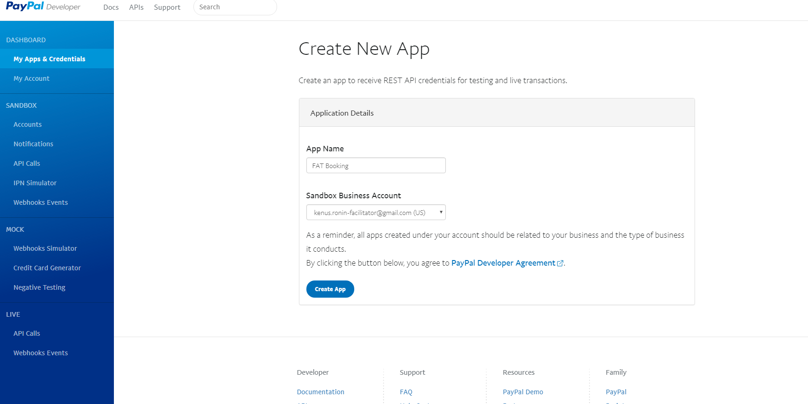

FAT Services Booking Documentation
visit roninwp.comPayment Setting
The payment setting provide feature to setting currency, currency symbol position (after or before) and payment method (onsite, paypal or stripe). To config please do follow:
- Log into your WordPress admin panel.
- Navigate to FAT Services Booking » Settings.
- Click at Payments

- 1. Currency : At here, you can select currency for your site. At left of select, it is currency name and at right is currency symbol
- 2. Price symbol position: This is option that allow setting position of currency symbol. You can set at after (example: 50$) or before (example: $50)
- 3. Paypal :
If you site allow payment via Paypal, please click at here. It will be show paypal config for your site:
- 3.1: Paypal Mode: This is option that switch between sandbox mode (for test) or live mode. The PayPal Sandbox is a self-contained, virtual testing environment that mimics the live PayPal production environment. It provides a shielded space where you can initiate and watch your application process the requests you make to the PayPal APIs without touching any live PayPal accounts. After you code and debug your application, including testing all your PayPal API calls in the sandbox, move your application to PayPal's production environment to go live.
- 3.2: ClientID and Secret: to connect and payment via Paypal, you need setting for ClientID and Secret. This is information to connect to your Paypal account.
- 3.3: Success page and Error page: With payment via Paypal, it will be redirect to Paypal site for confirm and execute payment. After execute payment, Paypal will be redirect to your site and you need config success page and error page to display after Paypal redirect
-
To get ClientID and Secret, please do follow:
- Log in to your PayPal account at: https://developer.paypal.com
- Go to 'My App & Credentials' in Dashboard
- Click 'Create App'
- Typing App Name and click 'Create App'
- Now you can see 'ClientID' and Secret key
-

- 4. Stripe : As same as Paypal, you need setting 'Publish Key' and 'Secret key' if you want payment via Stripe. To get key, please read at here: https://stripe.com/docs/keys
- 5. myPOS :
- 5.1. myPOS Mode: This is option that switch between sandbox mode (for test) or live mode. The myPOS Sandbox is a self-contained, virtual testing environment that mimics the live myPOS production environment. After you code and debug your application, including testing all your myPOS API calls in the sandbox, move your application to myPOS's production environment to go live.
- 3.2. StoreID: is given when you add a new online store. It could be reviewed in your online banking at www.mypos.eu > menu Online > Online stores..
- 3.3. Client ID (or Wallet ID): You can view your myPOS Client number in your online banking at www.mypos.eu
- 3.4. myPOS private key: The Private Key for your store is generated in your online banking at www.mypos.eu > menu Online > Online stores > Keys
- 3.5. myPOS public certificate: The myPOS Public Certificate is available for download in your online banking at www.mypos.eu > menu Online > Online stores > Keys.
- 3.6. Key index: The Key Index assigned to the certificate could be reviewed in your online banking at www.mypos.eu > menu Online > Online stores > Keys.
- 3.7: Success page and Error page: With payment via Paypal, it will be redirect to Paypal site for confirm and execute payment. After execute payment, Paypal will be redirect to your site and you need config success page and error page to display after Paypal redirect
-
To get StoreID, Client ID, private key,.. you can see more here:
Video how to use booking form builder.